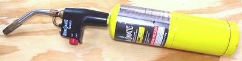

Many Mexican recipes, particularly from the Mayan region in the south,
call for roasting (or toasting) garlic, onions, chilis and other
vegetables. That's easy for them, they just place the whole vegetables
in hot ashes from the hearth fire they cook over. Here in Sunny Southern
California (and I imagine some other parts of the United States and
Canada), we rarely have a hearth fire going, so getting hot ashes is
quite inconvenient. We need to do our roasting some other way which will
have the same effect.
It's also great for roasting spices for curries, heating tortillas or chapatis, toasting parthas, and a whole lot of other things.
You also need a good set of tongs for handling larger hot rolly items
like chili peppers, and a very thin turner for tossing small items in the
pan.
 Yes, you want this - no, you need this! It will save you endless hours and frustration within almost every cuisine on the face of the Earth.
Every cookbook will give you one to three methods for skinning bell peppers and chilis. They all work equally well, which is to say, none of them works at all well. This device will turn charring a bell pepper's skin into a matter of seconds. It can also be used to flame peel tomatoes, chilis of any size or shape (but doesn't work well on eggplants. It'll instantly burn the pricklys off cactus pads, spiky chayotes and similar annoyances, making them safe to handle, and it'll burn the fuzz off a freshly feathered chicken, or a few stray hairs off a pig foot. It can also be used for burning the char off stove burners, repairing plumbing, lifting floor tiles, blistering paint and even browning those fancy Crème brûlée deserts (if you hold it back a ways).
The downside, but for only a very few recipes, is that bell peppers and chilis are charred so fast they are still completely raw. This is an advantage for most recipes, particularly salads, but a few recipes expect the peppers to be cooked by their recommended skinning method - just steam them a minute or two after brushing off the skin.
The yellow cartridge means "Map Gas" (actually the gas mix that
replaced map gas), which burns much hotter than propane. A propane torch
(blue cartridge) is usable, though not as efficient, as long as the
flame is fairly wide. Map gas is more expensive, but, hey, a single
cartridge lasts me three to five years in normal kitchen use.
Just break up the head, without peeling. Bring your comal up good
and hot on a high burner. Toss the garlic cloves around on the comal
until they are lightly charred on the outside and cooked through. It
only takes a few minutes. Let them cool, and peel off the skins,
which will now come off very easily.
Since the roasted onions are usually cut up and/or cooked to mush,
it's fine to peel them and cut them into thick slices for roasting.
Lining the pan with aluminum foil is a suggestion from Rick Bayless, an
expert in Mexican cooking. It avoids sticking problems and certainly
makes cleaning the pan a whole lot easier. As with garlic, heat the pan
very hot on a high burner. The photo specimens were lightly browned
and still crunchy in the middle, but you can also roast them black if
you want them very soft and with a charred flavor.
Here the torch really shines. All the chilis in the photo took only seconds to blacken, literally. Bell peppers may take about a minute because they are so large. No, there was not a hint of chili fumes - I only encounter those when cleaning up my tools and working surfaces with hot water, wow!
All that remains now is to brush off the skins under running water,
using a regular vegetable brush or similar. They brush off very easily.
If a few flakes still cling to the chili, that's not a problem, and may
enhance flavor in some recipes.
The torch can also be used, and is very fast, but must be used with
care, and from a greater distance than for fresh chilis. At the first
hint of smoke, pull back and let that part cool while doing another
part. The dried New Mexico chili in the photo was torch roasted, with
considerable care, and did not taste burned. In fact, it was delicious -
I ate the whole thing just as it was.
If you want to drive a significant amount of roasted flavor into
the tomato, you have to torch it a lot longer than you might think,
to blacken that wet inner skin.